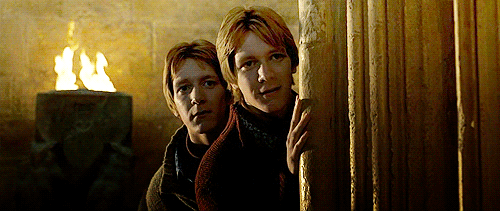
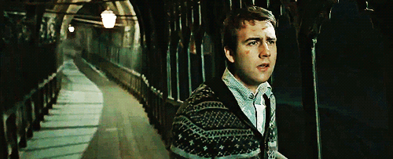
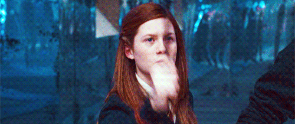
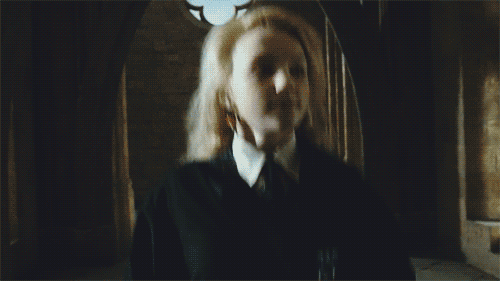
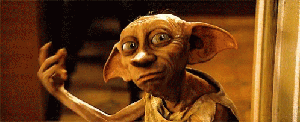
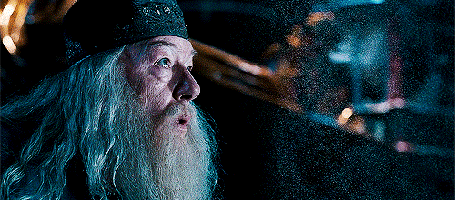
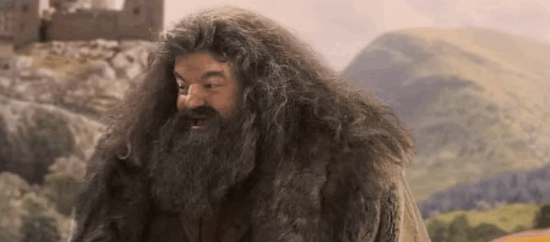
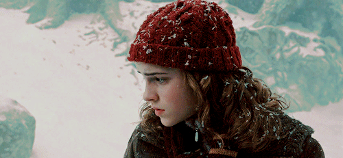
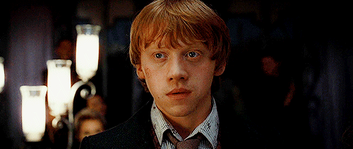

Fred & George Weasley
The Chaotic Weasley Twins
Of all the characters in Harry Potter, the Weasley Twins, Fred, and George stand out as the most mischievous, going against the school hierarchy throughout their years at Hogwarts. Throughout Harry's school years, Fred and George act as older brother figures in Harry's life, with Harry often staying with the Weasleys. When Harry fails to receive consent to go to Hogsmeade, Fred & George hand Harry a map to help him escape Hogwarts in order to reach Ron and Hermione. Even after Fred & George leave Hogwarts, the brothers still provide joy for students, including Harry, as they launch their prank store in Diagon Alley.
Neville Longbottom
From Shy Student To Hero
Besides Harry, Neville is the character that has grown the most throughout the story of Harry Potter. Starting as a shy kid who lacked friends, Neville was often picked on by classmates. Despite this, Harry became one of Neville's friends as they grew closer throughout their school years. When the whole of Hogwarts turns against Harry when he gets selected by the Goblet of Fire, Neville is the only student willing to be friends with Harry. Neville soon becomes Harry's trusted friend, as the pair eventually become involved in many battles alongside each other. The decisive battle that led to Harry defeating Voldemort came down to Neville's bravery, as he killed Nagini, Voldemort's last Horcrux, allowing Harry to conquer the dark lord.
Ginny Weasley
Harry's Future Wife
Initially starting as a shy girl from the Weasley household, Ginny later becomes Harry's wife as the pair develop their romance during their school years at Hogwarts. From very early on, Ginny and Harry are linked due to Ginny being held hostage by Tom Riddle in the Chamber of Secrets, eventually leading to Harry saving Ginny's life. As the pair grow older, their relationship grows stronger as Ginny becomes Harry's trusted ally when they go to save Harry's godfather, Sirius Black. By the end of the story, Harry and Ginny are shown as being married with children, solidifying their relationship.
Luna Lovegood
Harry's Quirky Friend
Among Harry's trusted friends is Luna Lovegood, introduced in Harry Potter and the Order of the Phoenix. Despite Luna's quirky personality turning other students off her, Harry gravitates towards Luna as the pair bond over their shared ability to see Thestrals. When Harry goes to rescue Sirius Black in the battle of the Department of Mysteries, Luna is one of the select few who accompanies Harry, showing his trust in Luna as a friend and a wizard. The pair's relationship is strong, considering when searching for Horcruxes, Harry, Ron, and Hermione go to Luna's house to ask her father, Xenophilius Lovegood, about the Deathly Hallows.
Dobby
Harry's Loyal House Elf
Dobby originally comes to Harry against the wishes of the Malfoy family. However, early into their relationship, Dobby manages to get Harry in severe trouble with the Dursleys, Harry's foster family. As Harry's house-elf, Dobby serves his master by warning Harry about the Chamber of Secrets at Hogwarts and the dangers it may cause. Dobby's presence in the films is limited compared to the books, with Dobby only reappearing in Harry Potter and the Deathly Hallows Part 1 to save Harry and his friends. As Dobby, Harry, and their party attempt to flee the Malfoy Manor, Dobby is struck by a knife thrown by Bellatrix, leading to his death. Dobby's sacrifice for Harry and his friends is not forgotten by the wizard, as he buries his house-elf with honor and respect.
Albus Dumbledore
The Headmaster Of Hogwarts
As Headmaster of Hogwarts, Albus Dumbledore is in charge of hundreds of students, although Harry stands out among the crowd as a unique wizard to the famed headmaster. From the beginning of Harry's life, Dumbledore has played a vital role, from delivering Harry to the Dursleys to leading Harry on the path to defeating Voldemort. As Harry develops his knowledge of magic throughout his years at Hogwarts, Dumbledore offers guidance and a shoulder to lean on for the young wizard who has the fate of the wizarding world on his shoulders.
Rubeus Hagrid
Hogwarts' Gamekeeper
Hagrid is the very first character from the wizarding world to contact Harry, informing the young boy that he has an invitation to attend Hogwarts. From the start of Harry's journey, Hagrid has been a source of comfort and friendship as Harry deals with issues within Hogwarts. Often accompanied by Ron and Hermione, Harry visits Hagrid at his hut to seek information, as the trio heavily relies on Hagrid. Hagrid is always present in many of Harry's most integral moments, with Hagrid being the one to carry his presumably dead body back to Hogwarts after Voldemort kills Harry. Just as Hagrid is the one to bring Harry into the wizarding world, Hagrid must be the one to see him out.
Hermione Granger
Loyal & Incredibly Intelligent
Known for being among the smartest in Hogwarts, Hermione Granger is one of Harry's best friends, alongside Ron Weasley. Hermione and Harry's relationship since their first year has been incredibly strong, with the pair being extraordinarily talented and sharp in their academics and dueling abilities. Hermione has always leaned on Harry for advice or comfort over the years regarding Hogwarts issues or her love for Ron. Even in dark times, Hermione goes to extreme lengths alongside Ron to help Harry in his quest to defeat Voldemort, showing how important Harry is to her as a friend.
Ron Weasley
Harry's Best Friend Since Hogwarts' First Day
In Harry Potter, Ron Weasley is not only Harry's best friend but Harry's first friend made at Hogwarts. Harry and Ron immediately hit it off on their travels to Hogwarts, as they continually stand alongside Ron's future partner, Hermione, in many mischievous adventures involving danger. From playing a chess match of death to going into the Ministry of Magic in disguises, Ron has helped Harry defeat Voldemort despite enduring tough times throughout their relationship. Despite their dispute over events such as the Goblet of Fire controversy or Ron leaving during their search for Horcruxes, the pair always reconcile as best friends do.